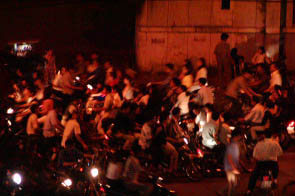
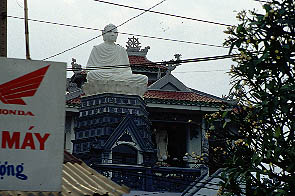
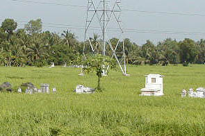
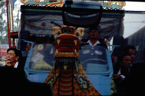
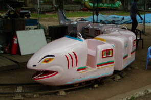
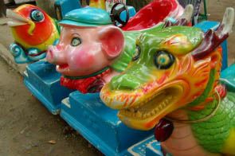
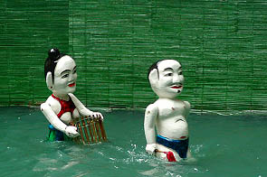
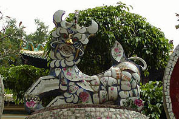

CurtainCall/カーテンコール
〜あとがきにかえて〜
え〜と、越南珍寺劇場を最後まで御観覧いただきまして誠にありがとうございました。
最後にベトナムの寺についてまとめてこの越南珍寺劇場を締めようかと思ったのだが、結論として
色々あり過ぎてまとめられない
ので総括的なことはやめました。
で、替わりに小ネタをいくつか。
1.新年暴走
大晦日の夜11時頃、ホテルの外が騒がしいのでカーテンを開けてみると・・・

路上にバイクがあふれてました。新年暴走です。まるでバイクに乗りながらジェンガ（わかんないかなあ〜）をやっているみたいです。
ちなみにこの通りは普段夜になると人通りがほとんどない道です・・・
2.大仏
ホーチミンからミトーへ向かう途中に車中から見かけた大仏。

どこだったのか、何と言う寺だったのかは判りません。多分ホーチミン市内です。
パゴダ風の台座がかっこいいですね。工事中だったみたいです。
3.墓と霊柩車
メコンデルタの水田地帯にはこうして所々に墓があります。
のんびりとした気持ちになります。
 
一方右は霊柩車。ホーチミンの郊外で見かけました。
市内では楽団付きの霊柩車も見ました。
分かりにくいですが派手に飾られたトラックの前の部分に龍の頭がくっついているという素晴らしいもの。
運転席にはたくさんの兄貴達がすずなりになって乗っています。多分運転手は右側が全く見えないでしょう。
4.公園の遊具
凶悪な表情の遊具。
 
これじゃ怖くて乗れないでしょ。
5.水上人形劇
ハノイが有名ですが、ホーチミンの歴史博物館でも水上人形劇が見られます。

面白かったので、その内詳しく紹介するかも知れません。
6.怖いケモノ
今回のベストキャラクター賞。

陶器モザイクのナイスなケモノ。顔がチョット・・・
越南珍寺劇場 おしまい
越南珍寺劇場
珍寺大道場 HOME